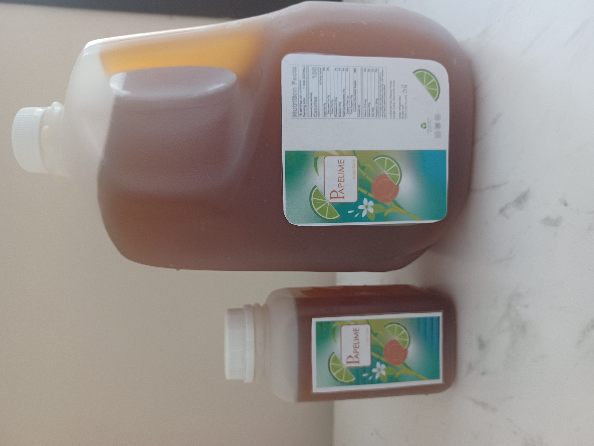

Una bebida tropical refrescante,
hecha como la prepara Abuela.
Papelime es una bebida 100% natural hecha con caña de azúcar y jugo de limón real. Una receta tradicional latinoamericana — energizante, exótica y saludable.

Agua filtrada · Caña de azúcar · Limón.
Agua filtrada
Base limpia de manantial
Caña de azúcar
Papelón crudo sin refinar
Jugo de limón
Exprimido a mano
Energizante. Exótica. Saludable.
Más que un refresco. La caña de azúcar es rica en minerales y antioxidantes — ayuda a regular el metabolismo, reduce el estrés y los antojos, y te mantiene activo durante el día.
Rica en minerales
Hierro, calcio y potasio de la caña cruda — los que el azúcar refinado ha eliminado.
Antioxidante
Polifenoles naturales del papelón que combaten los radicales libres.
Regula el metabolismo
Un revitalizante tradicional en toda Latinoamérica. Refresca de una forma, hidrata de otra.
Reduce los antojos
Dulzura naturalmente satisfactoria — calma la sed y la urgencia de picar.
" Quiero probar algo diferente que realmente sacie mi sed.
— Participante de la encuesta, Falls Church, VA · de 350 personas en Northern Virginia
Llévala contigo. O comparte el galón.

Botella 16 oz
Cabe en bolsos, mochilas y oficinas. Perfecta para el gimnasio, el sendero, el escritorio.
Galón 1 gal
16 porciones, 100 calorías cada una. Sirve sobre hielo. Bébela fría o caliente.
Encuentra Papelime cerca de ti.
Disponible en Falls Church, Springfield, Alexandria y Arlington. Supermercados, kioscos y tiendas de la esquina.
Dónde Encontrarnos